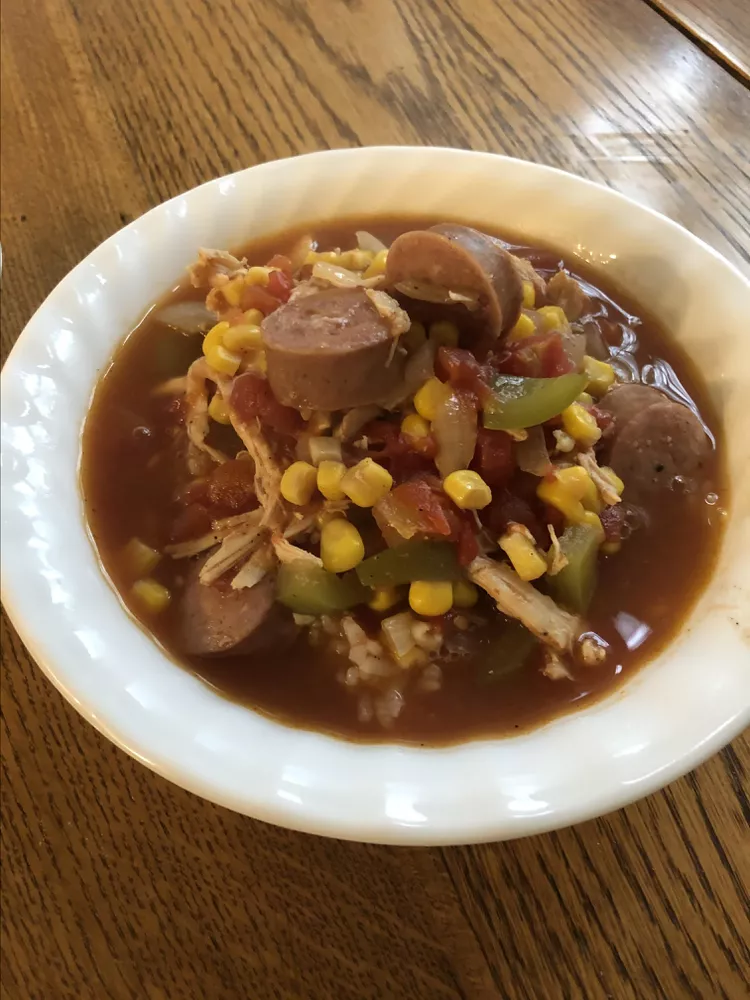

← Go back to home
Chicken Gumbo Wow
Quick, easy, and deliciously seasoned Cajun chicken stew. Serve over cooked rice.

Prep Time: 20 mins | Cook Time: 25 mins | Total Time: 45 mins | Servings: 6
Ingredients
- 1 onion, chopped
- 1 green bell pepper, chopped
- 3 cloves garlic, minced
- ½ rotisserie chicken, boned and shredded
- 1 tablespoon Creole seasoning (such as Tony Chachere's)
- 1 (28 ounce) can petite diced tomatoes
- 1 (16 ounce) can chicken broth
- 1 (15 ounce) can corn, drained
- 1 (12 ounce) package andouille sausage, sliced (such as Sam's Choice All-Natural Cajun-Style)
Directions
- Step 1
Heat a pan over medium-high heat. Add onion, bell pepper, and garlic; saute until onion is translucent, about 5 minutes. Add shredded chicken and Creole seasoning. Mix thoroughly. Add tomatoes, chicken broth, corn, and sausage. Reduce heat and simmer until flavors come together, about 20 minutes.